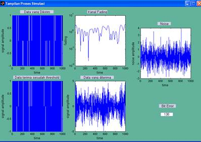

Contents
SIMULASI KANAL
Setelah menyelesaikan perancangan dan kemudian pembuatan perangkat lunak pada bab sebelumnya, kini dilakukan pengujian dan sekaligus analisis atas hasil program simulasi yang telah diselesaikan. Pada simulasi ini digunakan beberapa parameter yang menjadi input dari simulasi yang dibuat. Parameter–parameter itu adalah :
- Jumlah bit
Jumlah bit yang digunakan adalah sebesar 1000 dan 10.000 bit.
- Frekuensi Doppler
Frekuensi Doppler yang digunakan adalah sebesar 100 Hz dan 1000 Hz.
- Laju bit
Laju bit yang digunakan adalah sebesar 10000 bps.
Parameter simulasi ini dapat dimasukkan ke program simulasi yang dibuat melalui bagian parameter.
Pada kondisi I, jumlah bit yang digunakan adalah sebesar 1000 bit, frekuensi Doppler 100 Hz dan laju bit sebesar 10000 bps. Setelah program dijalankan akan tampak nilai Ts yaitu sebesar 0,0001 detik dan Tc = 0,001790 detik. Besar nilai rata-rata dan variansi untuk kanal fading dan noise dapat dilihat pada Tabel 4.1.
Tabel 4.1 Mean dan Variance Kanal Fading dan Noise Kondisi I

Dari hasil yang diperoleh pada Tabel 4.1, maka dapat dihitung selang kepercayaan untuk pembangkitan kanal fading dan noise dengan menggunakan persamaan 3.46. Contoh perhitungan selang kepercayaan fading untuk tingkat kepercayaan 95 % :
1,24890 – 1,96(0,01940) £ m £ 1,24890 + 1,96(0,01940)
1,21080 £ m £ 1,28700
Contoh perhitungan selang kepercayaan noise untuk tingkat kepercayaan 95 % :
-0,00793 – 1,96(0,03170) £ m £ -0,00793 + 1,96(0,03170)
-0,07012 £ m £ 0,05426
Hasil perhitungan dapat dilihat pada Tabel 4.2.
Tabel 4.2 Selang Kepercayaan pada Pembangkitan Kanal Fading dan Noise
|
Selang Kepercayaan Pembangkitan Kanal Fading |
Selang Kepercayaan Pembangkitan Noise |
|
1,21080 ≤ μ ≤ 1,28700 |
-0,07012 ≤ μ ≤ 0,05426 |
|
1,20830 ≤ μ ≤ 1,28580 |
-0,04082 ≤ μ ≤ 0,02918 |
|
1,22350 ≤ μ ≤ 1,29620 |
-0,01942 ≤ μ ≤ 0,01956 |
|
1,22850 ≤ μ ≤ 1,29900 |
-0,01467 ≤ μ ≤ 0,00742 |
|
1,15840 ≤ μ ≤ 1,23090 |
-0,00638 ≤ μ ≤ 0,00621 |
|
1,14760 ≤ μ ≤ 1,22740 |
-0,00308 ≤ μ ≤ 0,00391 |
Besar nilai rata-rata dan variansi untuk sinyal yang diterima dapat dilihat pada Tabel 4.3.
Tabel 4.3 Mean dan Variansi untuk Sinyal Terima Kondisi I
Dari hasil yang diperoleh pada Tabel 4.3 maka dapat dihitung selang kepercayaan untuk sinyal terima dengan menggunakan persamaan 3.46. Contoh perhitungan sinyal terima untuk tingkat kepercayaan 95% adalah :
-0,00950 – 1,96(0,05420) £ -0,00950 + 1,96(0,05420)
-0,11580 £ m £ 0,09679
Hasil perhitungan dapat dilihat pada Tabel 4.4.
Tabel 4.4 Selang Kepercayaan Sinyal yang Diterima
|
Selang Kepercayaan Sinyal yang Diterima |
|
-0,11580 ≤ μ ≤ 0,09679 |
|
-0,07782 ≤ μ ≤ 0,10862 |
|
-0,08405 ≤ μ ≤ 0,09374 |
|
-0,08150 ≤ μ ≤ 0,09309 |
|
-0,09117 ≤ μ ≤ 0,07453 |
|
-0,09053 ≤ μ ≤ 0,07848 |
Hasil grafik Probability of error terhadap SNR seperti pada Gambar 4.1.
Gambar 4.1 Grafik Kondisi I
Dari hasil simulasi Gambar 4.1 terlihat bahwa dengan pengiriman jumlah bit sebesar 103 bit grafik hasil simulasi menjauhi dengan hasil teori untuk tiap nilai SNR yang diberikan. BER juga semakin kecil seiring dengan kenaikan SNR.
Tabel 4.5 Contoh perhitungan jumlah bit error untuk SNR = 0 dB, data ke 101-120
|
Data Awal (s) |
Fading (f) |
Noise (n) |
Data Terima (s*f) + n |
Data Sesudah Threshold (r) |
Data Error
|
|
1 |
0,7004 |
0,7139 |
0,0134 |
1 |
0 |
|
-1 |
0,7019 |
1,2664 |
0,5645 |
-1 |
0 |
|
-1 |
0,7034 |
0,9386 |
1,6420 |
-1 |
0 |
|
-1 |
0,7048 |
-0,4789 |
-1,1837 |
1 |
1 |
|
-1 |
0,7062 |
0,5142 |
1,2205 |
-1 |
0 |
|
1 |
0,7077 |
-0,6930 |
-1,4007 |
1 |
0 |
|
1 |
0,7091 |
-0,2605 |
-0,9696 |
1 |
0 |
|
-1 |
0,7105 |
2,0773 |
2,7878 |
1 |
1 |
|
1 |
0,7119 |
-0,6107 |
0,1012 |
-1 |
1 |
|
-1 |
0,7133 |
-1,1212 |
-0,4079 |
-1 |
0 |
|
1 |
0,7147 |
-1,5588 |
-2,2735 |
1 |
0 |
|
1 |
0,7161 |
-0,3852 |
0,3309 |
-1 |
1 |
|
1 |
0,7175 |
-0,8064 |
-0,0889 |
1 |
0 |
|
1 |
0,7188 |
-0,0824 |
-0,8012 |
-1 |
1 |
|
1 |
0,7202 |
-1,4941 |
-2,2143 |
1 |
0 |
|
1 |
0,7215 |
1,5614 |
2,2829 |
1 |
0 |
|
-1 |
0,7228 |
0,4651 |
1,1880 |
-1 |
0 |
|
-1 |
0,7242 |
0,9985 |
0,2744 |
-1 |
0 |
|
1 |
0,7255 |
-0,8571 |
-1,5826 |
1 |
0 |
|
-1 |
0,7268 |
0,8416 |
0,1148 |
-1 |
0 |
|
Total Bit Error |
5 |
||||

Gambar 4.2 Contoh Tampilan Proses Simulasi
Contoh perhitungan untuk SNR = 0 db :
1. BER hasil simulasi :
2. BER teori :
Untuk SNR selanjutnya, perbandingan nilai BER hasil rata-rata simulasi dengan hasil perhitungan secara teori dapat dilihat pada Tabel seperti pada Tabel 4.6.
Tabel 4.6 Hasil Akhir Kondisi I
Dari Tabel 4.6 terlihat nilai BER hasil simulasi sangat berbeda dengan nilai BER hasil perhitungan secara teori. Hal ini disebabkan karena jumlah bit yang dikirimkan sangat sedikit sehingga pengaruh fading sangat kecil.
Pada kondisi II, jumlah bit yang digunakan adalah sebesar 10000 bit, frekuensi Doppler 100 Hz dan laju bit sebesar 10000 bps. Setelah program dijalankan akan tampak nilai Ts yaitu sebesar 0,0001 detik dan Tc = 0,001790 detik. Besar nilai rata-rata dan variansi seperti pada Tabel 4.7.
Tabel 4.7 Mean dan Variance Kanal Fading dan Noise Kondisi II
Dari hasil yang diperoleh pada Tabel 4.7, maka dapat dihitung selang kepercayaan untuk pembangkitan kanal fading dan noise. Hasil perhitungan dapat dilihat pada Tabel 4.8.
Tabel 4.8 Selang Kepercayaan pada Pembangkitan Kanal Fading dan Noise
|
Selang Kepercayaan Pembangkitan Kanal Fading |
Selang Kepercayaan Pembangkitan Noise |
|
1,21900 ≤ μ ≤ 1,24250 |
-0,02325 ≤ μ ≤ 0,01599 |
|
1,23880 ≤ μ ≤ 1,26230 |
-0,01349 ≤ μ ≤ 0,00856 |
|
1,23560 ≤ μ ≤ 1,25900 |
-0,00656 ≤ μ ≤ 0,00579 |
|
1,23590 ≤ μ ≤ 1,25930 |
-0,00286 ≤ μ ≤ 0,00409 |
|
1,22470 ≤ μ ≤ 1,24830 |
-0,00207 ≤ μ ≤ 0,00186 |
|
1,23750 ≤ μ ≤ 1,26090 |
-0,00103 ≤ μ ≤ 0,00116 |
Besar nilai rata-rata dan variansi untuk sinyal yang diterima dapat dilihat pada Tabel 4.9.
Tabel 4.9 Mean dan Variansi untuk Sinyal Terima Kondisi II
Dari hasil yang diperoleh pada Tabel 4.9 maka dapat dihitung selang kepercayaan untuk sinyal terima. Hasil perhitungan dapat dilihat pada Tabel 4.10.
Tabel 4.10 Selang Kepercayaan Sinyal yang Diterima
|
Selang Kepercayaan Sinyal yang Diterima |
|
-0,03604 ≤ μ ≤ 0,03056 |
|
-0,03089 ≤ μ ≤ 0,02780 |
|
-0,02726 ≤ μ ≤ 0,02834 |
|
-0,02971 ≤ μ ≤ 0,02494 |
|
-0,01998 ≤ μ ≤ 0,03405 |
|
-0,02679 ≤ μ ≤ 0,02752 |
Hasil grafik Probability of error terhadap SNR seperti pada Gambar 4.3.

Gambar 4.3 Grafik Kondisi II
Dari hasil simulasi Gambar 4.3 terlihat bahwa dengan jumlah bit sebesar 104 bit terlihat bahwa grafik hasil simulasi mendekati dengan hasil teori untuk tiap nilai SNR yang diberikan. BER juga semakin kecil seiring dengan kenaikan SNR. Untuk mengetahui nilai BER perbandingan hasil rata-rata simulasi dengan hasil perhitungan secara teori dapat dilihat pada Tabel seperti pada Tabel 4.11.
Tabel 4.11 Hasil Akhir Kondisi II
Dari Tabel 4.11 terlihat BER hasil simulasi sedikit berbeda dengan BER hasil perhitungan secara teori. Hal tersebut dikarenakan semakin banyak bit yang dikirimkan maka error yang terjadi juga semakin banyak sehingga hasilnya akan sedikit berbeda dengan hasil teoritis.
Pada kondisi III, jumlah bit yang digunakan adalah sebesar 10000 bit, frekuensi Doppler 1000 Hz dan laju bit sebesar 10000 bps. Setelah program dijalankan akan tampak nilai Ts yaitu sebesar 0,0001 detik dan Tc = 0,0001790 detik. Besar nilai rata-rata dan variansi seperti pada Tabel 4.12.
Tabel 4.12 Mean dan Variance Kanal Fading dan Noise kondisi III
Dari hasil yang diperoleh pada Tabel 4.12, maka dapat dihitung selang kepercayaan untuk pembangkitan kanal fading dan noise. Hasil perhitungan dapat dilihat pada Tabel 4.13.
Tabel 4.13 Selang Kepercayaan pada Pembangkitan Kanal Fading dan Noise
|
Selang Kepercayaan Pembangkitan Kanal Fading |
Selang Kepercayaan Pembangkitan Noise |
|
1,22990 ≤ μ ≤ 1,25480 |
-0,02290 ≤ μ ≤ 0,01619 |
|
1,22980 ≤ μ ≤ 1,25470 |
-0,01323 ≤ μ ≤ 0,00877 |
|
1,23160 ≤ μ ≤ 1,25650 |
-0,00656 ≤ μ ≤ 0,00580 |
|
1,23140 ≤ μ ≤ 1,25630 |
-0,00290 ≤ μ ≤ 0,00405 |
|
1,22900 ≤ μ ≤ 1,25390 |
-0,00237 ≤ μ ≤ 0,00156 |
|
1,23080 ≤ μ ≤ 1,25570 |
-0,00099 ≤ μ ≤ 0,00121 |
Besar nilai rata-rata dan variansi untuk sinyal yang diterima dapat dilihat pada Tabel 4.14.
Tabel 4.14 Mean dan Variansi untuk Sinyal Terima Kondisi III
Dari hasil yang diperoleh pada Tabel 4.14 maka dapat dihitung selang kepercayaan untuk sinyal terima. Hasil perhitungan dapat dilihat pada Tabel 4.15.
Tabel 4.15 Selang Kepercayaan Sinyal yang Diterima
|
Selang Kepercayaan Sinyal yang Diterima |
|
-0,03938 ≤ μ ≤ 0,02778 |
|
-0,02544 ≤ μ ≤ 0,03354 |
|
-0,02668 ≤ μ ≤ 0,02950 |
|
-0,03905 ≤ μ ≤ 0,01618 |
|
-0,02810 ≤ μ ≤ 0,02672 |
|
-0,03446 ≤ μ ≤ 0,02031 |
Hasil grafik Probability of error terhadap SNR seperti pada Gambar 4.4.
Gambar 4.4 Grafik Kondisi III
Dari hasil simulasi Gambar 4.4 dengan jumlah bit sebesar 104 bit yang sama dengan jumlah bit pada kondisi II dan frekuensi Doppler dinaikkan yaitu sebesar 1000 Hz, terlihat bahwa grafik hasil simulasi mendekati dengan hasil secara teori untuk tiap nilai SNR yang diberikan. BER juga semakin kecil seiring dengan kenaikan SNR. Untuk mengetahui nilai BER perbandingan hasil rata-rata simulasi dengan hasil perhitungan secara teori dapat dilihat pada Tabel seperti pada Tabel 4.16.
Tabel 4.16 Hasil Akhir Kondisi III
Dari Tabel 4.16 terlihat bahwa BER hasil simulasi juga tidak jauh berbeda dengan BER hasil perhitungan secara teori. Hal tersebut dikarenakan semakin besar frekuensi Doppler, menyebabkan semakin cepat terjadinya fading pada kanal transmisi sehingga error yang terjadi juga semakin banyak sehingga hasilnya akan mendekati hasil teoritis.